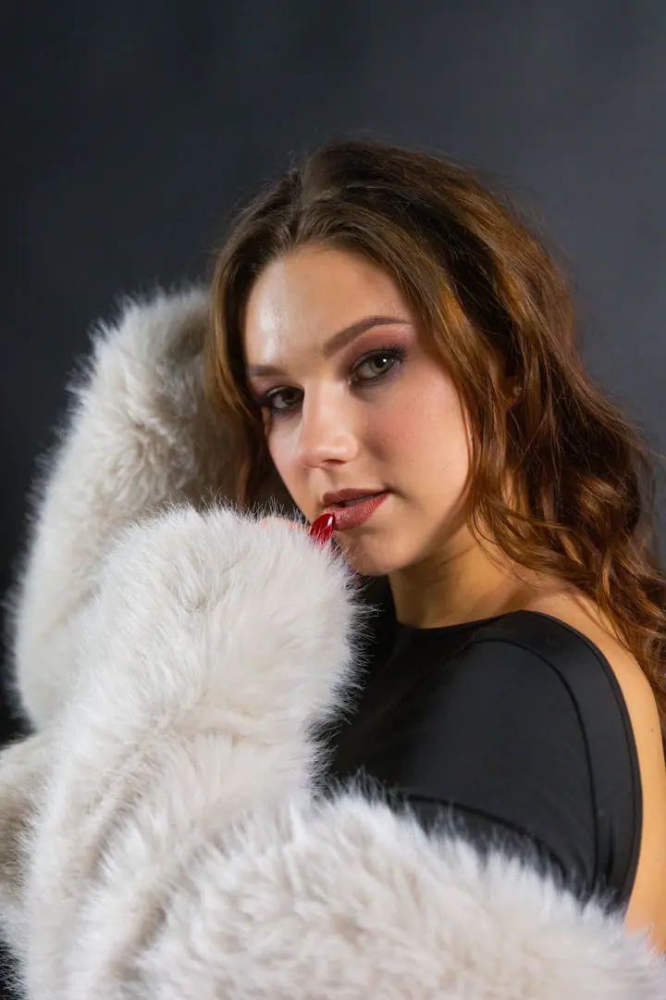
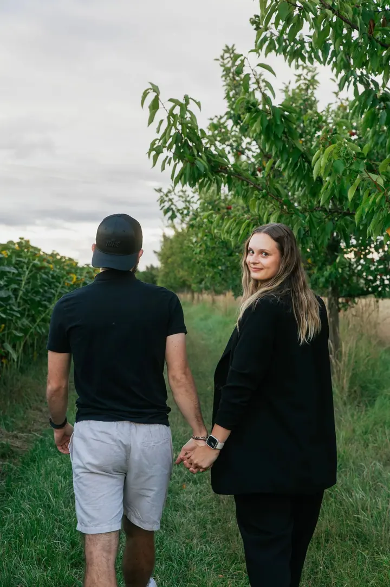
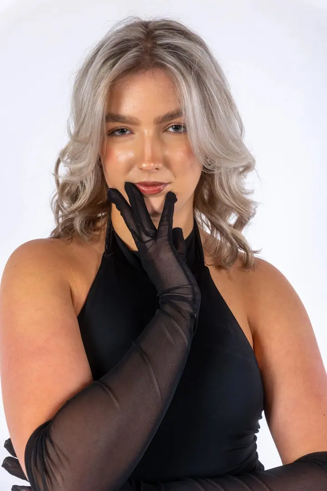
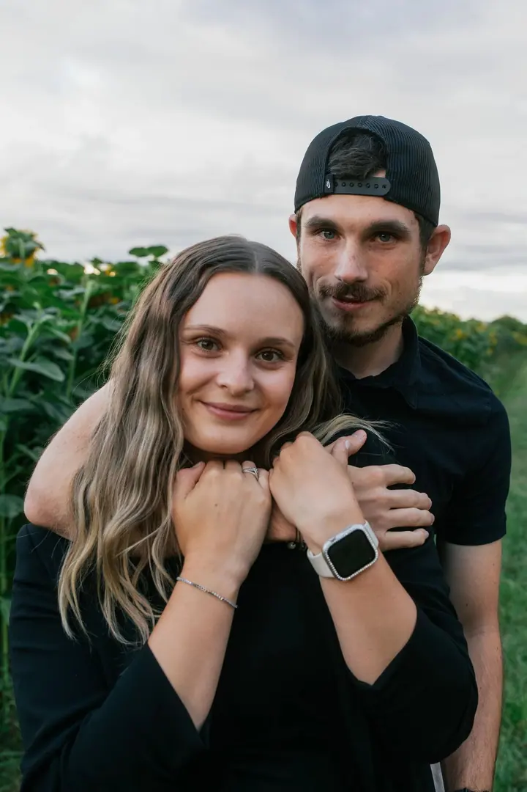

01 / 04
Sportovní reportáž
Fotím celé zápasy, na hřišti i na parketu. Nejlepší fotky vybírám už během akce, takže je můžete hned dát na sociální sítě. Cena od 1 500 Kč.
Zeptat se na termín→



Zastavím čas, vy si užijete moment
Zeptat se na termín →(01) Ahoj
Jmenuji se Michael Zbruž a fotím sport , koncerty a plesy ve Valašském Meziříčí i kdekoliv jinde. Nejvíc mě baví být přímo v centru dění a hledat úhel, který ostatní nevidí. Chci, aby se k vašim fotkám bylo pořád proč vracet.
(02) Co fotím
01 / 04
Fotím celé zápasy, na hřišti i na parketu. Nejlepší fotky vybírám už během akce, takže je můžete hned dát na sociální sítě. Cena od 1 500 Kč.
Zeptat se na termín→02 / 04
Zachytím energii vystoupení a umím pracovat se scénickým osvětlením. Fotím i firemní akce, večírky a teambuildingy.
Zeptat se na termín→03 / 04
Fotím maturitní plesy a slavnostní večery formou elegantní reportáže, aby zůstaly zachycené všechny důležité chvíle večera.
Zeptat se na termín→Dále nabízím
Žádné strnulé pózování ani úsměvy na povel. Rozsah a cenu domluvíme individuálně a před svatbou se spolu sejdeme.
↗(04) Postup
Od první zprávy po hotovou galerii.
Krok 1 z 4
Ozvěte se mi s termínem. Probereme vaši představu, místo a co konkrétně od fotek potřebujete.
Krok 2 z 4
Na místě jsem včas. Pracuji samostatně, akci neruším, ale jsem všude, kde se něco děje.
Krok 3 z 4
Vyberu nejlepší záběry, upravím barvy ve svém stylu a portréty jemně zretušuji.
Krok 4 z 4
Do 48 hodin dostanete online galerii s fotkami v plném rozlišení.
Nejlepší záběry vznikají, když na objektiv úplně zapomenete.
(05) Za objektivem
Jmenuji se Michael a focení je pro mě víc než jen stisknutí spouště. Na prvním místě je pro mě autenticita a čistá energie okamžiku. Ať fotím dynamickou reportáž, sport, maturitní ples, svatbu nebo komerční zakázku, chci věci zachytit takové, jaké jsou: živé, syrové a opravdové.
Stavím na technické preciznosti, rychlých reakcích a citu pro detail, který ostatním často uteče. Fotím na Canon R6 mk2 a R6 se světelnými skly Tamron řady G2, takže si poradím i ve velmi špatném světle na zimním stadionu nebo v tmavém sále. Spolupracoval jsem třeba s HC Bobři Valašské Meziříčí, 1.FBK Rožnov pod Radhoštěm nebo s městem Valašské Meziříčí.
Za fotoaparátem se snažím vytvořit uvolněnou atmosféru, kde se nikdo nemusí do ničeho nutit. Na akci pracuji samostatně a nerušim její průběh, ale jsem všude, kde se něco děje.
Michael
Michael Zbruž · Sportovní a eventový fotograf
Obvykle do 48 hodin od konce akce. U větších turnajů se domluvíme individuálně, ale malou ukázku se snažím poslat ještě týž den.
Ano, za kvalitním sportem nebo zajímavou akcí dojedu kamkoliv po České republice i na Slovensko. Dopravu účtuji podle domluvy.
Fotím na profesionální těla Canon R6 mk2 a R6 se světelnými skly Tamron G2 (15–30 mm, 24–70 mm a 70–200 mm f/2.8). Díky nim zvládnu i hodně špatné světlo bez ztráty kvality.
Soustředím se hlavně na fotografii. Na krátká Reels nebo promo videa spolupracuji s ověřenými kameramany, takže společně pokryjeme celou akci.
(07) Kontakt
Napište pár vět o tom, co si představujete, a termín, který se vám hodí.